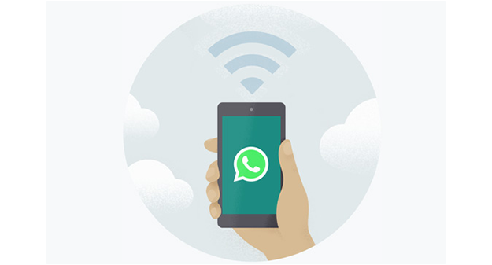

Mantenha o seu telemóvel ligado á internet
O whatsapp liga-se ao eu telemóvel para sincronizar as mensagens.Para reduzir o consumo de dados móveis,certifique-se de o teu telemóvel está ligado a uma rede wifi
O whatsapp liga-se ao eu telemóvel para sincronizar as mensagens.Para reduzir o consumo de dados móveis,certifique-se de o teu telemóvel está ligado a uma rede wifi